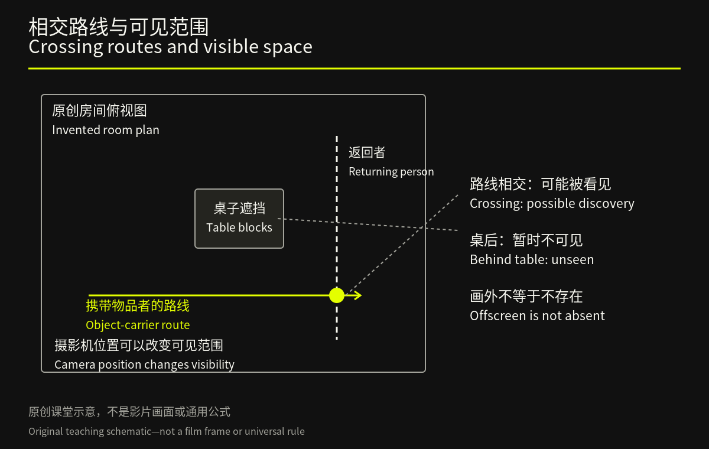
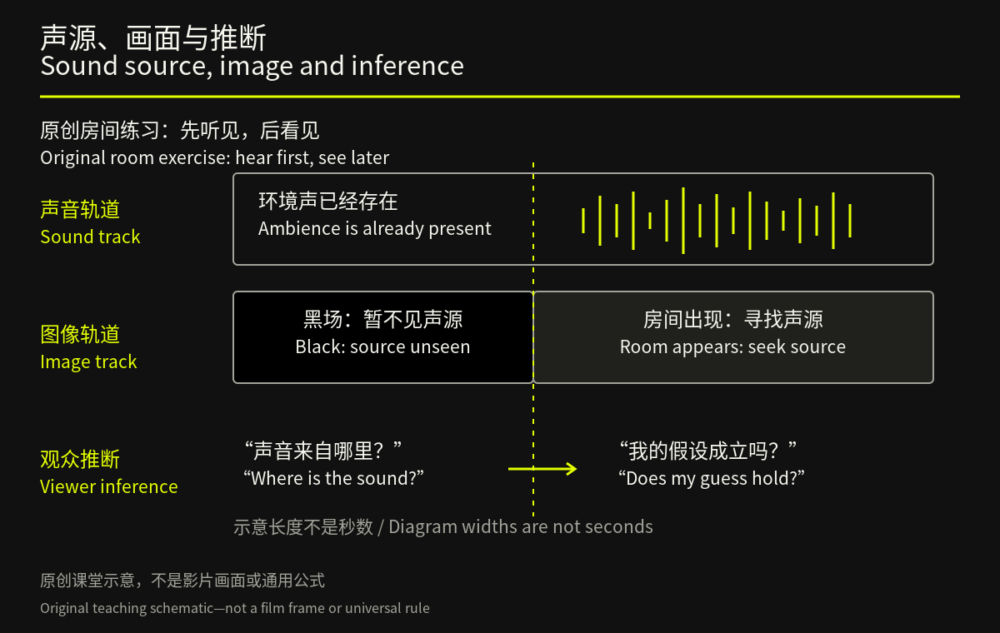
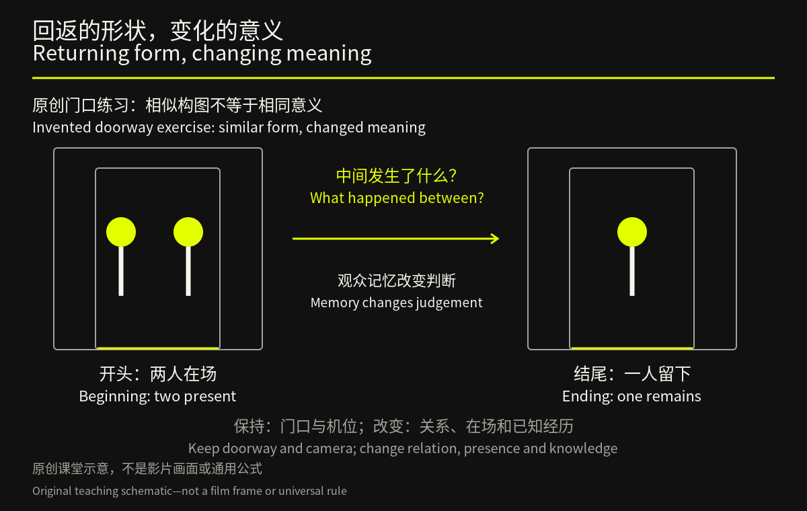

“Perfect” does not mean one correct opening. It means an opening fitted to this film’s way of seeing. A room, a routine or a sound can be more compelling than an explosion. We will not grade a mandatory event at a prescribed minute. We will test what viewers see, hear and consequently expect.
Record before interpreting; interpret before remaking. Keep three columns: “checkable image/sound fact → my inference → an alternative explanation.” Use a lawful copy. Do not infer an original shot’s full duration from a tutorial’s edited excerpt. The film observations below draw on available transcript text or signed articles, not on a claim of frame-by-frame viewing. Passages marked “Seminar interpretation” are arguments, not a filmmaker’s stated intention.
剧透提示：第 1–4 章与第 6 章主要讨论开场。第 5 章和第 7 章含《降临》《搏击俱乐部》《1917》《消失的爱人》的结构性剧透，相关案例默认折叠。先看电影，或自己决定是否展开。Spoiler notice: chapters 1–4 and 6 mainly discuss beginnings. Chapters 5 and 7 contain structural spoilers for Arrival, Fight Club, 1917 and Gone Girl; those cases stay collapsed. Watch first, or decide whether to open them.
01
先决定我们跟谁一起知道Viewpoint is a distribution of knowledge
目标Objective
把“摄影机在哪里”与“观众能知道多少”分开设计。
Design camera position separately from the extent of audience knowledge.
观察Observation
字幕文本分析Transcript-based analysis
《搏击俱乐部》Fight Club（1999，David Fincher）用从身体内部向外的数字运动、嘴里的枪和第一人称旁白，把危机与叙述者的思想捆在一起，随后转入过去。Just One More Thing 的字幕分析指出，这既提出当下的危险，也逐步交代人物关系。不要把教程对脑部位置的说法当作医学教学，也不要照搬其“第一幕必须何时结束”的划分。
In Fight Club (1999, David Fincher), a digitally constructed movement from inside the body outward, a gun in the mouth and first-person narration bind immediate danger to the narrator’s thoughts before the story moves into the past. Just One More Thing’s transcript discusses both the immediate questions and the gradual delivery of relationships. Its anatomical description is not a medical teaching source, and its act divisions are not compulsory timing rules.
内容提示：教程预览可能出现枪支与暴力画面，并涉及《搏击俱乐部》的开场。预览图是创作者的 YouTube 缩略图，不是本课截取的影片画格。Content note: the tutorial preview may show a gun and violence, and it concerns the opening of Fight Club. The image is the creator’s YouTube thumbnail, not a film frame captured for this course.
若嵌入被网络拦截，使用下方原站链接。本页文字、练习与图解不依赖播放，也不承诺任何地区可看或配有中文字幕。If the embed is blocked, use the external link. The text, exercises and diagrams on this page do not depend on playback, and this course does not promise regional availability or Chinese subtitles.
First-person nonlinear exposition. Use it to map what the narrator tells us against what is independently shown. Claims of “perfect” exposition and fixed act divisions remain the essay’s opinions.
观众与人物的信息差。图上的中英文是图解本身的一部分：观众先看见错误，人物稍后才可能发现，原因可以暂时保留。Audience–character knowledge gap. The Chinese and English labels are drawn on the graphic: viewers see the mistake first; the character may learn later; the cause can stay withheld.
A first-person voice is not a guarantee of objective truth. Images can bring us close to someone’s experience without making their explanation reliable. Treat sensory proximity, emotional allegiance and belief in a statement as three separate decisions.
比较案例Comparative case
文章依据Article-based
《重庆森林》Chungking Express（1994，王家卫 Wong Kar Wai）也把运动和个人叙述结合。Amy Taubin 描述的开场是重印式慢动作追逐，穿过重庆大厦拥挤的走廊和巷道；追逐中的相撞后来变成情感记忆。这是评论家的观察，不是导演自述。
Chungking Express (1994, Wong Kar Wai) also combines movement with personal narration. Amy Taubin describes a step-printed chase through Chungking Mansions’ crowded passages; a collision becomes part of an emotional memory. That is a critic’s observation, not a statement by the director.
Film a 45–75-second scene of someone entering an unfamiliar room to find an object. Version one restricts information to what they can know. Version two first shows viewers something the character has not discovered. Keep dialogue and performance unchanged. Ask two viewers separately whose side they took and what they believed.
讲评Critique
能否指出改变观众知识的具体镜头，而不只说“更紧张”？亲近与信任是否被误当成同一件事？
Can you identify the exact image changing viewer knowledge rather than merely saying “more tense”? Have intimacy and trust been mistaken for the same thing?
02
让空间产生事件Space is not a postcard
目标Objective
让空间关系产生等待、阻碍和风险，而不仅是介绍地点。
Make spatial relations generate waiting, obstruction and risk rather than simply introducing a location.
观察Observation
文章依据Article-based
《历劫佳人》Touch of Evil（1958，Orson Welles）的开场先让观众知道汽车里有炸弹，再组织汽车、行人、边境检查与一对夫妇的交错运动。Art of the Title 收录的评论强调了运动路线、边境空间和爆炸前的亲吻。版本很重要：1958 院线版有片头字幕与 Henry Mancini 的主题音乐；1998 修复版去掉该段字幕，采用沿途变化的场景内音乐。1998 不是一部新片的出品年。不要把任何一种笼统标成“唯一导演剪辑版”。
Touch of Evil (1958, Orson Welles) establishes a bomb in a car and then interlaces the movement of the car, pedestrians, a border checkpoint and a couple. Commentary collected by Art of the Title discusses those routes, the border and the kiss preceding the explosion. Version matters: the 1958 theatrical opening carries titles and Henry Mancini’s theme; the 1998 restoration removes those titles and uses changing source music. 1998 is not a new production year. Do not call either version an unqualified, definitive “director’s cut.”

相交路线与可见范围。图内标签写明桌子遮挡、路线相交和画外空间。这是虚构房间练习，不是 Welles 的布景平面图。Crossing routes and visible space. Labels on the graphic name the blocking table, the crossing and offscreen space. This is an invented room, not a Welles set plan.
Spatial information becomes dramatic when it predicts change: who can catch whom, who blocks whom, and whether viewers remember danger after it leaves the frame. A long take matters not because it avoids a cut but because it can sustain several actions at once.
Alien (1979, Ridley Scott) begins with a tour of the Nostromo’s interior. StudioBinder’s transcript identifies the confined spaces that will later trap the crew.
内容提示：这条教程讨论多部影片的开场，包括《异形》的封闭空间，也包含《降临》的结构信息和《十二宫》的暴力。先读提示，再看预览。Content note: this tutorial discusses several openings, including the confined spaces of Alien. It also contains structural information about Arrival and violence in Zodiac. Read the note before the preview.
本页只加载一次这个播放器。后面的章节会回到这张卡片。播放失败时，原站链接仍然可用。This page loads this player once. Later chapters return to this card. If playback fails, the external link remains available.
Setting, routine and diegetic news. Ask whether information comes from the character’s world or from an external narrator. An ordinary-world opening is a choice, not a rule.
The long take as crossing routes and sound versions. The collected commentators do not agree on which version is preferable. See the publisher’s illustrations on the article; this course does not reproduce them.
开场版本Opening versions展开《历劫佳人》的版本比较工作表。此处讨论开场路线与两套声音，不讨论影片结局。Open the Touch of Evil version worksheet. It compares the opening route and two sound treatments, not the film’s ending.
同一条路线，不同的声音街道Same route, different sonic street
文章与署名评论Article and attributed commentary
这是版本比较作业，不是声称在这里看过两个版本。可核对的事实有三条：开场先展示炸弹被放入汽车，随后组织汽车、行人与边境路线；1958 院线版加字幕并使用 Henry Mancini 的主题；1998 修复版去掉该段字幕，以沿街不同的场景内音乐构成声音环境；辑录的评论者并非一致认为某一版更好。
This is a version-comparison worksheet, not a claim that both versions were screened for this page. Three checkable facts: a bomb is placed in a car before the opening organises car, pedestrian and border routes; the 1958 theatrical opening has titles and Henry Mancini’s theme; the 1998 restoration removes those titles and uses changing source music; the collected commentators do not unanimously prefer one version.
不变项Hold constant
对照问题Comparison question
汽车里的危险Danger in the car
主题音乐是否让你追随动作？流动的场景内音乐是否让你感到空间在变化？两种答案都需要指出证据。Does a theme pull you along the action? Do changing source sounds mark changing space? Either answer needs evidence.
人群与角色的交错Crossing people and leads
片头字幕是否改变你的视觉注意力分配？不要预设“有字幕就不好”。Do titles redistribute visual attention? Do not assume titles necessarily weaken the opening.
等待危险到来Waiting for danger
什么让你记得画外的汽车：视线、路线、声音，还是已经知道的炸弹？What keeps the offscreen car present: gaze, route, sound or prior knowledge of the bomb?
Exercise: give one original corridor shot a continuous-music treatment and a zoned-ambience treatment without changing the image. Have viewers map the spaces they heard, and test whether spatial understanding changes.
Using one room, two people and an object that must remain hidden, map movement and the audience’s field of view. Make a continuous take under 90 seconds, then remake it in three shots. Ask viewers to sketch the room and mark when discovery became a concern. Use no real weapons, dangerous driving or explosive materials.
讲评Critique
空间是否可理解？画外危险是否仍然存在于观众脑中？是否为了炫技牺牲了事件？
Is the space legible? Does offscreen danger remain mentally present? Has virtuosity displaced the event?
03
承诺一种观看感受Tone is a contract, not a filter
目标Objective
用表演、剪辑、色彩与声画关系建立基调；允许基调复杂，不许用滤镜代替设计。
Establish tone through performance, editing, colour and sound–image relations. Allow complexity, and do not substitute a filter for design.
Marriage Story (2019, Noah Baumbach) begins with affectionate voiceovers and everyday fragments before revealing that those texts belong to a separation-mediation meeting. StudioBinder’s transcript connects that order with audience sympathy. Year and director: Criterion film page.
Tone is not a choice between happy and sad. Separate what the image shows, how the character responds and whether sound agrees or resists. Their disagreement can be more expressive than agreement, provided the film develops that relationship rather than abandoning it.
比较案例Comparative case
《逃出绝命镇》Get Out（2017，Jordan Peele）的开场让独行者在陌生郊区的玩笑与遭袭并存，再让歌曲 Run, Rabbit, Run 的语境与暴力发生摩擦。StudioBinder 的字幕据此讨论喜剧、恐怖和社会评论的混合。
In Get Out (2017, Jordan Peele), an isolated pedestrian’s joking response to an unfamiliar suburb coexists with an assault, and “Run, Rabbit, Run” creates friction with the violence. StudioBinder’s transcript uses this to discuss comedy, horror and social commentary together.
内容提示：预览涉及种族化的威胁、暴力和粗口，讨论的是开场而不是结局反转。先读提示，再看图。Content note: the preview involves racialised threat, violence and strong language. It discusses openings rather than an ending twist. Read this before the image.
不要把“必须立刻钩住观众”收成定律。用它比较信息次序如何改变同情。Do not import “must hook immediately” as a law. Use the essay to compare how information order shapes sympathy.
Tone promises and information order. The transcript text covers a villain introduction in The Dark Knight, affection-before-mediation in Marriage Story, the joke-and-assault juxtaposition in Get Out, and other openings.
Shoot someone returning a key. Edit the same material into tenderness and unease without changing dialogue or adding horror stingers. Change only entry points, reaction shots and the apparent distance of ambience. Ask what kind of relationship viewers expected next, not which version they liked.
Can the effect be traced to a reproducible choice? Can the subsequent story sustain the opening’s promise? Test the essay’s value judgement: did your sympathy actually change?
04
用日常暴露欲望与阻力An ordinary world can already contain conflict
目标Objective
不借人物自我介绍，用重复、偏差和物件显示生活规则。
Reveal a life’s rules through repetition, deviation and objects rather than self-description.
观察Observation
《奇幻人生》Stranger Than Fiction（2006，Marc Forster）的开场以旁白、刷牙等动作的计量和图形化信息，建立 Harold 的精确日常。这里的“普通”是高度设计的视听组织，不是无差别记录。年份与导演见 BBC 影评中的演职员信息。
Stranger Than Fiction (2006, Marc Forster) establishes Harold’s precise routine through narration, counted actions such as toothbrushing and graphic information. Its ordinariness is highly organised audiovisual form, not undifferentiated recording. Year and director: BBC review credits.
同一支 StudioBinder 第三集也讨论这种“一天的生活”。回到上面的教程卡片，不重复加载播放器。StudioBinder Part 3 also discusses this day-in-the-life approach. Return to the card above rather than loading a second player.回到第三集卡片Back to the Part 3 card
Establish a recognisable repetition so a small deviation can register. Desire need not begin as a grand mission. It may be punctuality, avoiding contact or preserving a small order. Ask what the action serves and what it costs.
WALL·E (2008, Andrew Stanton; BFI spells it WALL-E) places a robot’s labour inside an abandoned landscape of waste. StudioBinder’s transcript relates the contrast between outer space and Earth to environmental themes and the adventure ahead.
Use six shots to show a shop closing. Four establish procedure, the fifth disrupts it, and the sixth makes the character choose. No explanation of the past. Make another version omitting shot five and test whether desire and cost remain legible.
讲评Critique
重复是否可辨认而不机械？偏差是否改变行动？道具是否承担了人物信息？
Is repetition recognisable without becoming mechanical? Does deviation change behaviour? Do props carry character information?
05
悬念、缺口与误导Withhold answers, not the conditions for caring
目标Objective
区分悬念、好奇与迷惑，检验非线性顺序是否有必要。
Distinguish suspense, curiosity and disorientation, and test whether nonlinear order earns its place.
In an AFI seminar excerpt, Hitchcock’s bomb-under-the-table example explains how advance knowledge of danger can turn ordinary conversation into anticipation. This is a filmmaker’s working argument, not a psychological law binding every film. His emphasis on giving viewers relief should be compared with other practices rather than enforced as a prohibition. Open Culture identifies the material as a 1970 AFI seminar. That page locates the excerpt; it is not an extra course reading.
内容提示：研讨会讨论炸弹与《破坏》。Sabotage 没有提供已核对的时间码。预览是创作者缩略图。Content note: the seminar discusses a bomb and Sabotage. No checked timecode is supplied. The preview is the creator’s thumbnail.
Known danger and suspense. Treat it as a primary-source argument about distributing knowledge, then compare it with endings that withhold relief. Provenance: Open Culture on the 1970 seminar.
Draw three information tracks: audience knowledge, character knowledge and withheld information. Suspense often means knowing the danger without knowing its outcome. Curiosity often means knowing part of an outcome without its cause. They can overlap. A temporal jump distributes information; it does not automatically create concern. The diagram in chapter 1 draws those three tracks. It is not a film timeline.
结构剧透Structural spoilers展开前：此处比较《降临》与《搏击俱乐部》如何安排时间。未看过请跳过。Before opening: this compares how Arrival and Fight Club arrange time. Skip it if you have not seen them.
Arrival (2016, Denis Villeneuve) combines mother–daughter fragments, loss and narration about memory and time. StudioBinder Part 3 approaches it as a tragedy opening, but its apparent past must not be treated uncritically as an objective temporal location. Fight Club more explicitly frames a return toward how the narrator reached the opening crisis. The Part 3 card is in chapter 2; the first-person tutorial is in chapter 1.
剧透提示：下一条教程讨论闪回、闪前、书挡式首尾和误导，包含《消失的爱人》《1917》《惊魂记》等。先读提示，再看预览图。Spoiler notice: the next tutorial discusses flashback, flash-forward, bookends and misdirection, including Gone Girl, 1917 and Psycho. Read this before the preview.
Shoot three nodes: a parcel arrives, someone discovers a mistake, and they decide whether to open a door. Begin one edit at arrival and the other at discovery. Add no clues. Have viewers list facts and guesses. If they cannot identify who is doing what, repair legibility before praising confusion as sophistication.
讲评Critique
缺口是否具体？揭示后早先的画面是否仍然成立？误导是否靠公平的取景和省略，而不是虚假字幕欺骗？
Is the gap specific? Do earlier images remain valid after the revelation? Does misdirection arise from framing or omission rather than a false explanatory caption?
06
在第一幅画面之前开始Sound can orient us before the image does
目标Objective
把声音当作信息与视点，而不是后期才加的情绪装饰。
Treat sound as information and viewpoint, not emotional decoration added at the end.
Children of Men (2006, Alfonso Cuarón). Chris Wisniewski writes in Reverse Shot that news plays over black before a cafe crowd is revealed watching television; Theo buys coffee, the camera follows him outside, the explosion is offscreen and ringing takes over the soundtrack. StudioBinder Part 3 stresses that characters receive the news, which introduces immigration and infertility. Together the sources distinguish an initially unseen source from a sound outside the story world. Those are not equivalent. This course does not turn the description into measured shot lengths.

声源、画面与推断。图上写明声音轨道、图像轨道和观众推断。条的宽度不是秒数。Sound source, image and inference. The graphic names the sound track, the image track and the viewer’s inference. Bar widths are not seconds.
Hearing before seeing can create a hypothesis about space or source. Seeing before hearing can alter distance or subjectivity. What matters is what viewers construct during the delay, not delay itself. Distinguish diegetic sound, score, narration and subjective hearing. Quiet does not necessarily mean reducing every track to zero.
内容提示Content warning展开《人类之子》开场细读。文章写到爆炸与受伤。没有影片截图。Open the Children of Men opening close reading. The article describes an explosion and injury. There is no film still.
新闻先在黑场上出现，随后才看到咖啡馆的人群观看电视。News precedes the image over black; a cafe crowd watching television is then revealed.
声源未显现时，你猜它属于画内世界还是外部解说？来源显现后，先前的声音怎样被重新归类？Before the source is seen, do you infer story-world sound or external commentary? How does the revelation reclassify what you heard?
从人群到一个人的行动From crowd to one person
Theo 进入、买咖啡；文章记录了与电视有关的镜头关系，随后摄影机跟随他到街上。Theo enters and buys coffee; the article describes the television-related cuts and the camera following him outside.
一个小目标能否让我们进入宏大设定，而不先背完世界观？Can a small task draw us into a large premise without a preliminary world-history lecture?
从可见路线到画外事件From a visible route to an offscreen event
爆炸发生在画外；文章随后描述耳鸣占据声轨，摄影机转回咖啡馆。The explosion is offscreen; ringing takes over the soundtrack and the camera turns back toward the cafe.
听觉是否把“知道发生爆炸”变成“暂时共享受冲击的感受”？这是形式效果的解释，不是现实创伤诊断。Does hearing move us from knowing an explosion occurred toward sharing disorientation? This interprets form. It is not a clinical diagnosis of trauma.
Exercise: film a safe everyday task without staging danger. Use your own recorded offscreen sound to interrupt it, then alter the clarity of the following ambience. Ask whether informational change and felt change occur at the same point. Establish who can hear the sound before explaining its meaning. Do not treat a ringing effect as a medically accurate model of hearing injury.
Hear the world before seeing its source. The article’s picture stays on the publisher’s page. This course does not treat it as an opening or ending frame.
An alternative reading: politics and space in the world-building. It discusses immigration, fertility and digital composites inside apparently continuous shots. It does not verify the precise onset of the news over black. Whole-film spoilers.
比较案例Comparative case
Every Frame a Painting 讨论《愤怒的公牛》Raging Bull（1980，Martin Scorsese）时，依据采访与片段谈撤去效果声，以及家庭与拳台声音的结构关系。这不是对那部影片开场的个案断言，而是可迁移的声音方法。再回到《历劫佳人》两个开场：同一路线在主题音乐和流动的场景内音乐下，观众如何想象街道？
Every Frame a Painting’s discussion of Raging Bull (1980, Martin Scorsese) draws on interviews and excerpts to examine removed effects and the relationship between domestic and boxing sounds. This is a transferable method, not a claim about that film’s opening. Return to the two Touch of Evil openings: how does the same route become a different imagined street under a theme, as against changing source music?
内容提示：声音教程包含暴力、粗口和若干影片的重要情节。它是声音方法的辅助材料，不是开场或结尾综述。角色的心理解释不是客观事实。Content note: the sound essay includes violence, strong language and significant plot moments. It is an auxiliary sound method, not an opening or ending survey. Psychological readings of characters are not objective facts.
Record three safe environmental sounds yourself. Make three versions of the same black-to-room image: sound first, simultaneous sound and image, and an unseen source. Keep the image identical. Ask viewers to map the offscreen space they imagined. Do not outsource the effect to an unlicensed song.
讲评Critique
声音是否改变了信息或视点？没有音乐时，段落是否仍能成立？
Does sound change information or viewpoint? Does the scene still work without music?
07
序幕、片头与整部电影的关系Prologue, titles and the return journey
目标Objective
区别首个镜头、首场戏、序幕和片头；为结尾保留转化空间。
Distinguish the first shot, the first scene, the prologue and the title sequence, and leave room for transformation at the end.
观察Observation
文章依据Article-based
《七宗罪》Se7en（1995，David Fincher）著名的片头并不是全片第一段。Art of the Title 先写两位警探的前奏，再介绍 Kyle Cooper 在 R/Greenberg Associates West（R/GA Digital Studios 的分部）制作的片头：手、笔记本、照片、手工处理的字体与碎片化剪辑。设计与 David Fincher、Jenny Shainin 合作；剪辑是 Angus Wall。文章把音乐署成 Coil／Danny Hide 对 Trent Reznor《Closer》的混音。混音者的姓名是 Danny Hyde；本课采用 Hyde，片头工艺的描述仍以该文为依据。不要把整段片头归功于导演一个人。
The famous titles of Se7en (1995, David Fincher) are not the film’s first passage. Art of the Title describes the detectives’ prelude, then Kyle Cooper’s sequence at R/Greenberg Associates West, a division of R/GA Digital Studios: hands, notebooks, photographs, distressed type and fragmented editing. The design is credited in collaboration with David Fincher and Jenny Shainin; Angus Wall edited. The article prints the music credit as a Coil/Danny Hide remix of Trent Reznor’s “Closer.” The remixer’s name is Danny Hyde. This workshop uses Hyde; the account of the title craft still follows that article. Do not attribute the whole sequence to the feature director alone.
Titles as storytelling and collaboration. Ask what they add beyond the preceding scene. Process photos, type comps and storyboards are not frames from the finished sequence. The material is violent and macabre. Illustrations stay on the article.
A prologue can establish a wound, a historical context or danger. Titles can establish perception through texture, rhythm and scale. Both should do work this film needs, not merely make it look cinematic. Remove the prologue: have you lost an essential experience, or redundant explanation?

回返的形状，变化的意义。图上写着开头两人、结尾一人，以及中间经历如何改变判断。这是练习模型，不是某部影片的画格对照。Returning form, changing meaning. The graphic labels two people at the start, one at the end, and the intervening experience that changes judgement. It is an exercise model, not a traced pair of frames.
剧透Spoilers展开前：StudioBinder 第二集比较《1917》与《消失的爱人》的首尾图像。未看过请跳过。Before opening: StudioBinder Part 2 compares opening and ending images in 1917 and Gone Girl. Skip it if you have not seen them.
字幕文本分析Transcript-based analysis
第二集比较《1917》（2019，Sam Mendes）前后的休息意象：开头两名士兵，结尾 William 独自休息；并讨论《消失的爱人》Gone Girl（2014，David Fincher）开头与结尾相近的 Amy 镜头。这些是关系比较，不是精确帧匹配，也不是相同镜头时长的证据。播放器在第 5 章，本页不加载第二次。
Part 2 compares resting imagery in 1917 (2019, Sam Mendes): two soldiers at the start, William alone at the end. It also discusses related images of Amy in Gone Girl (2014, David Fincher). These are relational comparisons, not claims of exact frame matching or equal shot duration. The player is in chapter 5. This page does not load it twice.
Design a 60–90-second opening and a 20–40-second ending for a 3–5-minute short, using your own performers, images and sound. Submit a six-shot board, a sound–image plan, two opening edits, a version without the prologue, five anonymous viewer responses and a reflection of about 150 words. Durations constrain the exercise. They are not laws of cinema. Continue with the ending experiment in Perfect Endings.
讲评Critique
开场是否提出了影片真正关心的关系？片头是否增加感知而非复述简介？结尾的回返是否改变而非重复？
Does the opening establish a relationship the film actually explores? Do the titles add perception instead of repeating a synopsis? Does the ending transform rather than merely repeat?
Score five dimensions from 0 to 4, for 20 in total. 0 is absent evidence. 1 is intention only. 2 is partly legible but explanation-dependent. 3 is legible to viewers and backed by specific audiovisual evidence. 4 is a precise choice whose trade-off is shown by an alternative version. Resembling a famous director is not a criterion.
0没有证据Absent
1只有意图Intention
2依赖解释Needs a speech
3观众能指出Viewers can point
4对照过代价Trade-off shown
视点Viewpoint
谁知道什么？观众何时知道？
Who knows what, and when does the audience know?
空间与行动Space and action
身体、物件和画外空间是否相互产生影响？
Do bodies, objects and offscreen space affect one another?
声画设计Sound–image design
声音是否提供独立信息，而不是重复画面？
Does sound contribute information rather than merely duplicate the image?
承诺与展开Promise and development
开场是否与全片的情绪及伦理问题相连？
Does the opening connect with the film’s emotional and ethical questions?
修改能力Revision
是否根据观察到的反馈修改，而不是为所有选择辩护？
Did observed feedback produce revision rather than an automatic defence?
最后一个问题：如果把片名、剧情简介和导演名全部拿掉，你的开场还能教会观众怎样看这部电影吗？Final question: if the title, synopsis and director’s name vanished, would the opening still teach viewers how to watch this film?
These are identity checks, not twenty-three videos and not permission to screen the films. Chinese release titles vary by region. English titles and release years identify the works.
《搏击俱乐部》 / Fight Club · 1999 · David Fincher
《重庆森林》 / Chungking Express · 1994 · 王家卫 Wong Kar Wai
《历劫佳人》 / Touch of Evil · 1958 · Orson Welles · 1998 修复版不是新的出品年The 1998 restoration is not a new production year
《异形》 / Alien · 1979 · Ridley Scott
《婚姻故事》 / Marriage Story · 2019 · Noah Baumbach
《逃出绝命镇》 / Get Out · 2017 · Jordan Peele
《奇幻人生》 / Stranger Than Fiction · 2006 · Marc Forster
《机器人总动员》 / WALL·E · 2008 · Andrew Stanton
《降临》 / Arrival · 2016 · Denis Villeneuve
《人类之子》 / Children of Men · 2006 · Alfonso Cuarón
《愤怒的公牛》 / Raging Bull · 1980 · Martin Scorsese · 声音方法，不是开场个案Sound method, not an opening case
《七宗罪》 / Se7en · 1995 · David Fincher · 片头另有 Kyle Cooper 等署名Titles carry separate credits, including Kyle Cooper
教程作者、片头合作者与图解署名写在 CREDITS.md。直接打开出版社页面时，有些站点会先给出人机验证，这不等于链接失效。Tutorial creators, title collaborators and the diagram credit are in CREDITS.md. Some publisher sites show a bot check before the article. That is not a dead link.